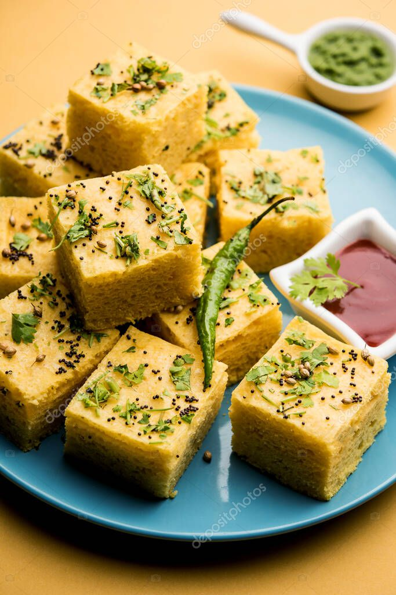

Home
Khaman Recipe

Description
Khaman is a spongy, steamed savory cake made
from a batter of gram flour (chickpea flour),
popular in Gujarat, known for its soft texture and tangy flavor.
Prep time: 10-15 minutes
Cooking time: 30-35 minutes
Serves: 4-5 people
Ingredients
For Khaman
- WATER 1 CUP
- CITRIC ACID 1 TSP (showing)
- SUGAR 3 TBSP
- SALT ½ TBSP
- GROUNDNUT OIL 1.5 TBSP
- GRAM FLOUR 2 CUPS / 220 GRAMS
- WATER AS REQUIRED
- OIL AS REQUIRED
- BAKING SODA 1 TSP
- WATER 1 TBSP
For Tempering
- GROUNDNUT OIL 2 TBSP
- MUSTARD SEEDS 1 TBSP
- GREEN CHILLI 3 NOS. (SLIT)
- CURRY LEAVES 10 NOS.
- ASAFOETIDA ¼ TSP
- WATER 1 CUP
- SUGAR 2 TBSP
- SALT TO TASTE
- FRESH CORIANDER A HANDFUL (CHOPPED)
- COCONUT A HANDFUL (GRATED)
Steps
- In a large bowl add water, citric acid, sugar, salt & groundnut oil, whisk we’ll for 2-3 minutes until the sugar & citric acid dissolves.
- Further sieve in the gram flour & whisk well for 3-4 minutes until you get a smoothly flowing batter, cover & let the batter rest for 10 minutes.
- While the batter is resting, set a steamer over high flame & keep it ready before you add the final ingredients of the batter, also grease the tray or plate you are going to be using to steam the khaman with oil, make sure it fits in the steamer.
- Once the batter has rested, add the baking soda along with a tablespoon of water & whisk we’ll, the batter will puff up & rise, keep whisking for 2-3 minutes.
- Quickly transfer the batter into the greased tray & tap it gently.
- Place the tray into the steamer, cover & steam for 20-25 minutes or until a knife inserted comes out clean.
- Remove the tray from the steamer once the khaman is ready & let it cool down to room temperature.
- Meanwhile, set a pan over high flame to make the tempering, add in the oil & let it heat up.
- Further add mustard seeds, green chilli & all the remaining ingredients of the tempering & boil the tempering for 2-3 minutes, then switch of the flame & let the tempering cool down slightly.
- Once the khaman comes down to room temperature, demold it by flipping it onto a plate, run a knife through the sides once before flipping it & then cut it into squares.
- Pour the tempering over the khaman & garnish it with fresh coriander & grated coconut while serving.